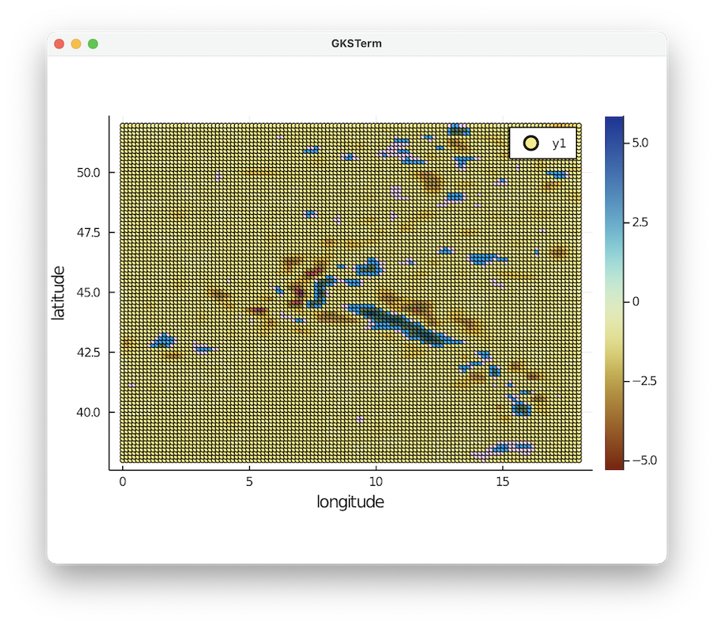
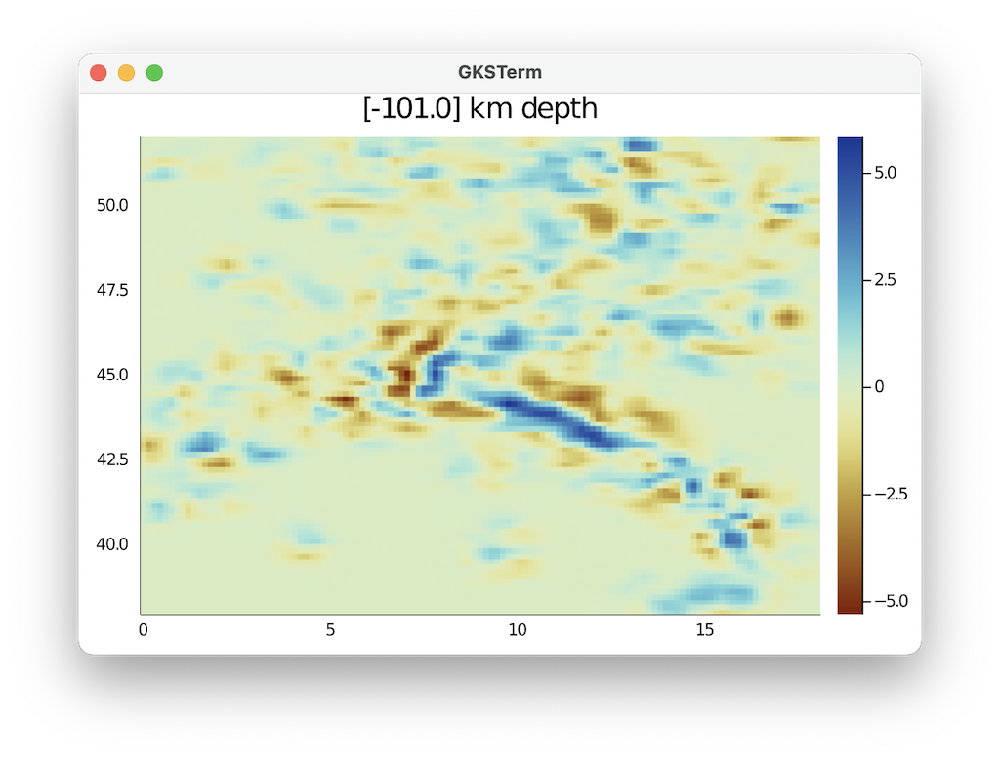
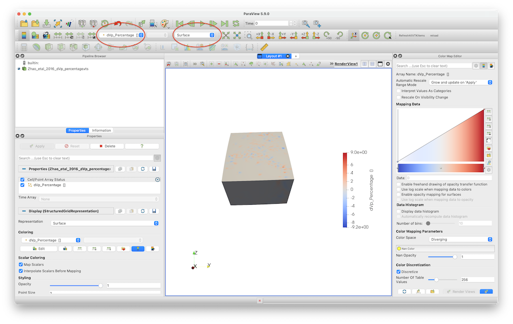
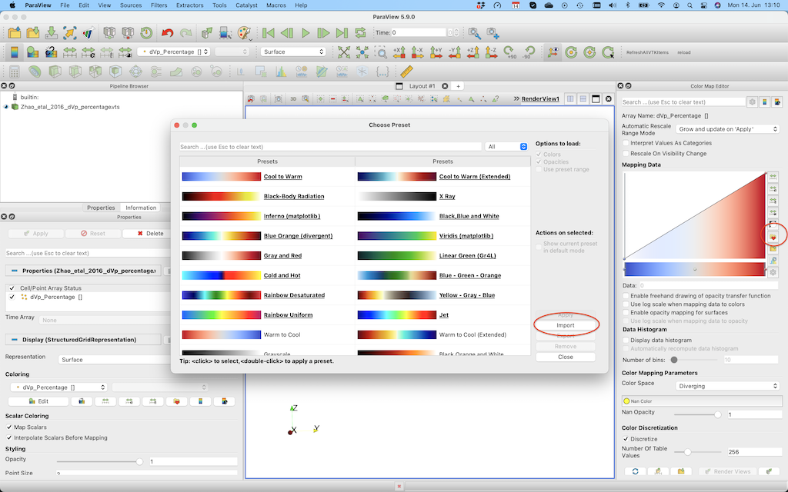
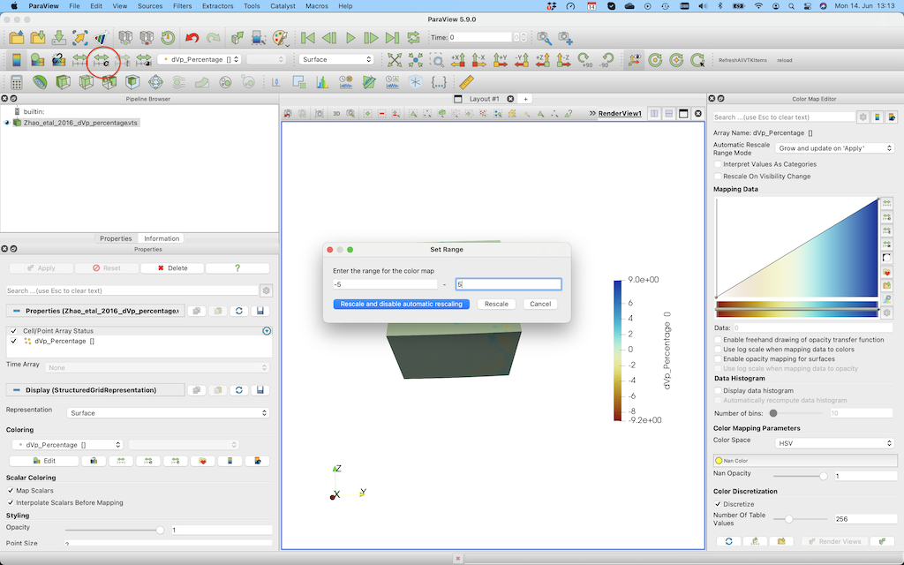
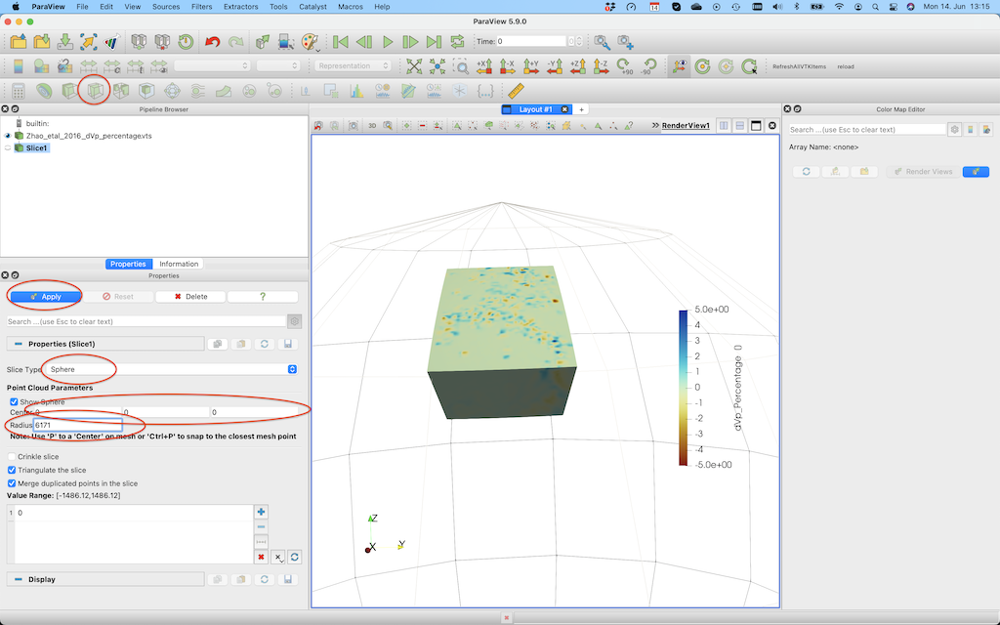
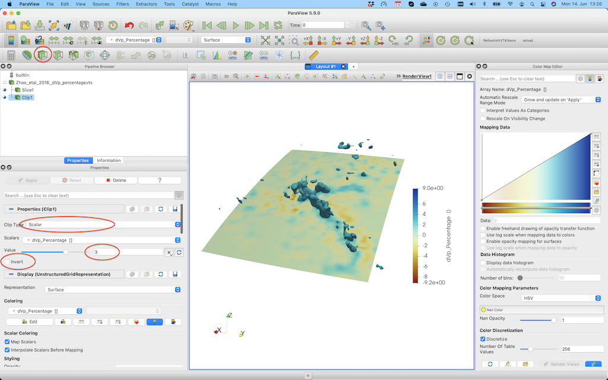
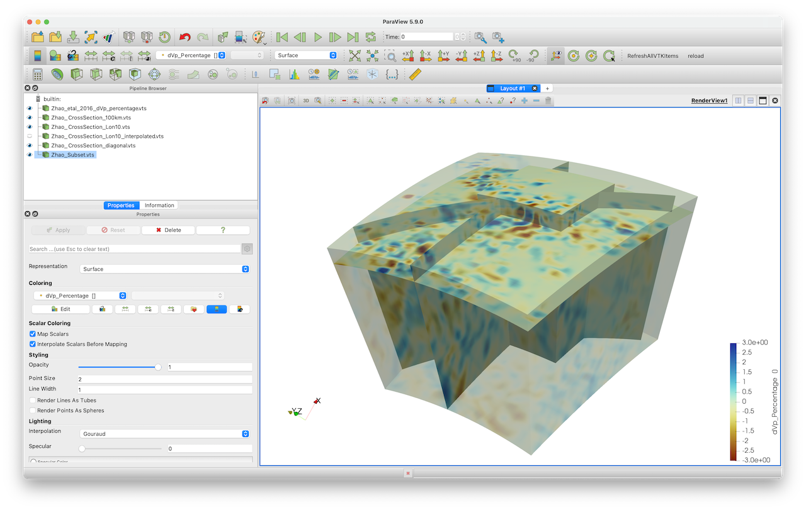

3D tomography model in CSV formation
Goal
This explains how to load a 3D P-wave model and plot it in Paraview as a 3D volumetric data set. It also shows how you can create horizontal or vertical cross-sections through the data in a straightforward manner and how you can extract subsets of the data; The example is the P-wave velocity model of the Alps as described in:
Zhao, L., Paul, A., Malusà, M.G., Xu, X., Zheng, T., Solarino, S., Guillot, S., Schwartz, S., Dumont, T., Salimbeni, S., Aubert, C., Pondrelli, S., Wang, Q., Zhu, R., 2016. Continuity of the Alpine slab unraveled by high-resolution P wave tomography. Journal of Geophysical Research: Solid Earth 121, 8720–8737. doi:10.1002/2016JB013310
The data is given in ASCII format with longitude/latitude/depth/velocity anomaly (percentage) format.
Steps
1. Download data
The data is can be downloaded from https://seafile.rlp.net/d/a50881f45aa34cdeb3c0/, where you should download the file Zhao_etal_JGR_2016_Pwave_Alps_3D_k60.txt. Do that and start julia from the directory where it was downloaded.
2. Read data into Julia
The dataset has no comments, and the data values in every row are separated by a space. In order to read this into julia as a matrix, we can use the build-in julia package DelimitedFiles. We want the resulting data to be stored as double precision values (Float64), and the end of every line is a linebreak (\n).
julia> using DelimitedFiles
julia> data=readdlm("Zhao_etal_JGR_2016_Pwave_Alps_3D_k60.txt",' ',Float64,'\n', skipstart=0,header=false)
1148774×4 Matrix{Float64}:
0.0 38.0 -1001.0 -0.113
0.15 38.0 -1001.0 -0.081
0.3 38.0 -1001.0 -0.069
0.45 38.0 -1001.0 -0.059
0.6 38.0 -1001.0 -0.055
0.75 38.0 -1001.0 -0.057
⋮
17.25 51.95 -1.0 -0.01
17.4 51.95 -1.0 -0.005
17.55 51.95 -1.0 0.003
17.7 51.95 -1.0 0.007
17.85 51.95 -1.0 0.006
18.0 51.95 -1.0 0.003Next, extract vectors from it:
julia> lon = data[:,1];
julia> lat = data[:,2];
julia> depth = data[:,3];
julia> dVp_perc = data[:,4];Note that depth needs to with negative numbers.
3. Reformat the data
Let's first have a look at the depth range of the data set:
julia> Depth_vec = unique(depth)
101-element Vector{Float64}:
-1001.0
-991.0
-981.0
-971.0
-961.0
-951.0
⋮
-51.0
-41.0
-31.0
-21.0
-11.0
-1.0So the data has a vertical spacing of 10 km. Next, let's check if the data is spaced in a regular manner in Lon/Lat direction. For that, we read the data at a given depth level (say -101km) and plot it using the Plots package (you may have to install that first on your machine).
julia> using Plots
julia> ind=findall(x -> x==-101.0, depth)
julia> scatter(lon[ind],lat[ind],marker_z=dVp_perc[ind], ylabel="latitude",xlabel="longitude",markersize=2.5, c = :roma)
Note that we employ the scientific colormap roma here. This gives an overview of available colormaps. You can download the colormaps for Paraview here.
Clearly, the data is given as regular Lat/Lon points:
julia> unique(lon[ind])
121-element Vector{Float64}:
0.0
0.15
0.3
0.45
0.6
0.75
⋮
17.25
17.4
17.55
17.7
17.85
18.0
julia> unique(lat[ind])
94-element Vector{Float64}:
38.0
38.15
38.3
38.45
38.6
38.75
⋮
51.2
51.35
51.5
51.65
51.8
51.953.1 Reshape data and save to paraview
Next, we reshape the vectors with lon/lat/depth data into 3D matrixes:
julia> resolution = (length(unique(lon)), length(unique(lat)), length(unique(depth)))
(121, 94, 101)
julia> Lon = reshape(lon, resolution);
julia> Lat = reshape(lat, resolution);
julia> Depth = reshape(depth, resolution);
julia> dVp_perc_3D = reshape(dVp_perc, resolution);Check that the results are consistent
julia> iz=findall(x -> x==-101.0, Depth[1,1,:])
1-element Vector{Int64}:
91
julia> data=dVp_perc_3D[:,:,iz];
julia> heatmap(unique(lon), unique(lat),data[:,:,1]', c=:roma,title="$(Depth[1,1,iz]) km")
So this looks good.
Next we create a paraview file:
julia> using GeophysicalModelGenerator
julia> Data_set = GeoData(Lon,Lat,Depth,(dVp_Percentage=dVp_perc_3D,))
GeoData
size : (121, 94, 101)
lon ϵ [ 0.0 - 18.0]
lat ϵ [ 38.0 - 51.95]
depth ϵ [ -1001.0 km - -1.0 km]
fields: (:dVp_Percentage,)
julia> Write_Paraview(Data_set, "Zhao_etal_2016_dVp_percentage")
1-element Vector{String}:
"Zhao_etal_2016_dVp_percentage.vts"4. Plotting data in Paraview
In paraview you should open the *.vts file, and press Apply (left menu) after doing that. Once you did that you can select dVp_Percentage and Surface (see red ellipses below)/. In paraview you can open the file and visualize it.

This visualisation employs the default colormap, which is not particularly good.
You can change that by importing the roma colormap (using the link described earlier). For this, open the colormap editor and click the one with the heart on the right hand side. Next, import roma and select it.

In order to change the colorrange select the button in the red ellipse and change the lower/upper bound. 
If you want to create a horizontal cross-section @ 200 km depth, you need to select the Slice tool, select Sphere as a clip type, set the center to [0,0,0] and set the radius to 6171 (=radius earth - 200 km).

After pushing Apply, you'll see this:

If you want to plot iso-surfaces (e.g. at -3%), you can use the Clip option again, but this time select scalar and don't forget to unclick invert.

5. Extract and plot cross-sections of the data
In many cases you would like to create cross-sections through the 3D data sets as well, and visualize that in Paraview. That is in principle possible in Paraview as well (using the Slice tool, as described above). Yet, in many cases we want to have it at a specific depth, or through pre-defined lon/lat coordinates.
There is a simple way to achieve this using the CrossSection function. To make a cross-section at a given depth:
julia> Data_cross = CrossSection(Data_set, Depth_level=-100km)
GeoData
size : (121, 94, 1)
lon ϵ [ 0.0 : 18.0]
lat ϵ [ 38.0 : 51.95]
depth ϵ [ -101.0 km : -101.0 km]
fields: (:dVp_Percentage,)
julia> Write_Paraview(Data_cross, "Zhao_CrossSection_100km")
1-element Vector{String}:
"Zhao_CrossSection_100km.vts"Or at a specific longitude:
julia> Data_cross = CrossSection(Data_set, Lon_level=10)
GeoData
size : (1, 94, 101)
lon ϵ [ 10.05 : 10.05]
lat ϵ [ 38.0 : 51.95]
depth ϵ [ -1001.0 km : -1.0 km]
fields: (:dVp_Percentage,)
julia> Write_Paraview(Data_cross, "Zhao_CrossSection_Lon10")
1-element Vector{String}:
"Zhao_CrossSection_Lon10.vts"As you see, this cross-section is not taken at exactly 10 degrees longitude. That is because by default we don't interpolate the data, but rather use the closest point in longitude in the original data set.
If you wish to interpolate the data, specify Interpolate=true:
julia> Data_cross = CrossSection(Data_set, Lon_level=10, Interpolate=true)
GeoData
size : (1, 100, 100)
lon ϵ [ 10.0 : 10.0]
lat ϵ [ 38.0 : 51.95]
depth ϵ [ -1001.0 km : -1.0 km]
fields: (:dVp_Percentage,)
julia> Write_Paraview(Data_cross, "Zhao_CrossSection_Lon10_interpolated");as you see, this causes the data to be interpolated on a (100,100) grid (which can be changed by adding a dims input parameter).
We can also create a diagonal cut through the model:
julia> Data_cross = CrossSection(Data_set, Start=(1.0,39), End=(18,50))
GeoData
size : (100, 100, 1)
lon ϵ [ 1.0 : 18.0]
lat ϵ [ 39.0 : 50.0]
depth ϵ [ -1001.0 km : -1.0 km]
fields: (:dVp_Percentage,)
julia> Write_Paraview(Data_cross, "Zhao_CrossSection_diagonal")Here an image that shows the resulting cross-sections:

6. Extract a (3D) subset of the data
Sometimes, the data set covers a large region (e.g., the whole Earth), and you are only interested in a subset of this data for your project. You can obviously cut your data to the correct size in Paraview. Yet, an even easier way is the routine ExtractSubvolume:
julia> Data_subset = ExtractSubvolume(Data_set,Lon_level=(5,12), Lat_level=(40,45))
GeoData
size : (48, 35, 101)
lon ϵ [ 4.95 : 12.0]
lat ϵ [ 39.95 : 45.05]
depth ϵ [ -1001.0 km : -1.0 km]
fields: (:dVp_Percentage,)
julia> Write_Paraview(Data_subset, "Zhao_Subset")This gives the resulting image. You can obviously use that new, smaller, data set to create cross-sections etc. 
By default, we extract the original data and do not interpolate it on a new grid. In some cases, you will want to interpolate the data on a different grid. Use the Interpolate=true option for that:
julia> Data_subset_interp = ExtractSubvolume(Data_set,Lon_level=(5,12), Lat_level=(40,45), Interpolate=true)
GeoData
size : (50, 50, 50)
lon ϵ [ 5.0 : 12.0]
lat ϵ [ 40.0 : 45.0]
depth ϵ [ -1001.0 km : -1.0 km]
fields: (:dVp_Percentage,)
julia> Write_Paraview(Data_subset, "Zhao_Subset_interp")7. Load and save data to disk
It would be useful to save the 3D data set we just created to disk, such that we can easily load it again at a later stage and create cross-sections etc, or compare it with other models. It is quite easy to do so with the JLD2.jl package:
julia> using JLD2
julia> jldsave("Zhao_Pwave.jld2"; Data_set)If you, at a later stage, want to load this file again do it as follows:
julia> using JLD2, GeophysicalModelGenerator
julia> Data_set_Zhao2016_Vp = load_object("Zhao_Pwave.jld2")8. Julia script
The full julia script that does it all is given here. You need to be in the same directory as in the data file, after which you can run it in julia with
julia> include("Alps_VpModel_Zhao_etal_JGR2016.jl")